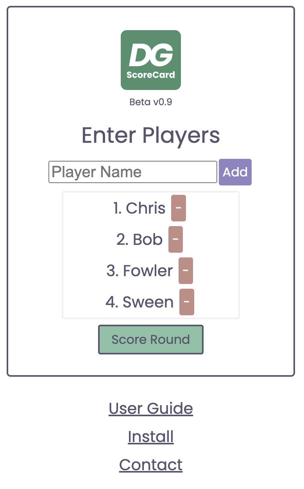
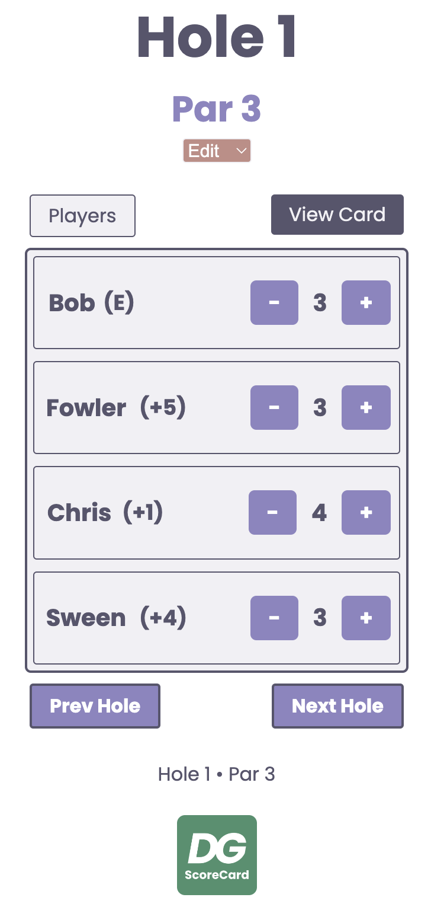
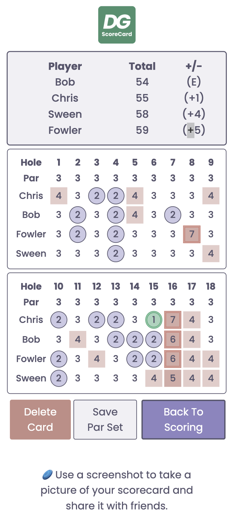

Thank you for choosing dgScoreCard!
dgScoreCard is a progressive web application (PWA) that is meant to keep disc golf scoring quick and
easy.
This means that you can choose to install DGScoreCard as a tile on your phone’s home screen and the app
will appear to run natively, regardless of the make. Or, if you’re pinched for time, you can just
navigate to DGScoreCard.com and start scoring your round. All that’s needed is a phone that has web
browsing access and an internet connection.*
Getting Started With dgScoreCard
- Navigate to dgscorecard.com on your favorite browser (Safari or Chrome are recommended).
- First time visitors will be guided to the Enter Players view.
Enter Players View
In the Enter Players View you can add or remove any players that you would like. You also have access
to support links below the main window.

- To add players, type the players name in the text field and hit the Add button.
- If you successfully entered the player’s name it will appear in the player list below the text
input.
- Next to the player name you will see a red [ - ] button. Clicking this button will prompt you to
confirm whether or not you want the player removed from the card. To remove the player, click
OK to confirm. To keep the player on the card, simply click on cancel in the confirmation
popup.
- The player list size isn’t capped, but it’s recommended to start two cards for groups larger
than 7 for ease of scoring.
- Players can be added and removed at any point in the round by clicking the [ Players ] button in
the active scoring window.
- Currently, editing names isn’t supported, but you can add or delete players at any point in the
round. If you do happen to spell someone’s name wrong it is recommended that you remove their
name and replace it before scores are recorded.
Active Scoring View
In Active Scoring View you can keep live scores for each player in your round, view current +/- round
scores, and navigate to the Full Card and Enter Player views. Think of the Active Scoring window as
the central window of the app.

- After starting to score a round, opening the app or going to dgScoreCard.com will guide you to
the active scoring view. This is the main app window where player scores can be entered and
where you have linked access to both the player entry view as well as the full scorecard.
- In the active scoring view, player scores can be entered with the [ - ] and [ + ] buttons. When
you first hit the [ + ] button, the par score will be displayed and then continue to rise
without limit. Hitting the [ - ] button will start with the birdie score and then continue to
count down to 0, at which time the hole score is represented with a dash. A dash indicates the
hole has been reset back to its initial state. The inactive hole is also NOT currently being
counted in the round score.
- While increasing or decreasing hole scores, players’ +/- scores are updated in real time. Plans
to hide the over/under score are on my ToDo list.
- After scoring a hole, the tee box throwing order of the players will be determined for you.
Players will be arranged in throwing order in the scoring view when advancing to the next hole
to be scored.
- To change the par value for the hole, click the “Edit” drop down under the par value displayed
on screen. Select the par value you would like that hole to have. All round scores and player
+/- scores will be updated to reflect this new par value.
- To advance from one hole to the next or previous hole, use the Prev Hole and Next Hole buttons
under the active scoring window.
Full Scorecard View
The full scorecard can be accessed from the Active Scoring View by pressing the [ View Card ] button.

- In the Full Card View window, the leader board is displayed at the top of the screen and it
shows player standings and +/- scores.
- The box score shows all hole scores for the round and scores for each player for each hole.
- Score entries are color coded.
- A green circle with a double outline indicates an eagle, ace, or albatross.
- A blue circle with a single outline is a birdie.
- A number with no ornamentation is a par.
- A number surrounded by a coral box is a bogie.
- A number surrounded by a darker coral box is a double bogie.
- Triple bogie and higher scores have a darker coral box with a double outline.
- Your round score will only be counted for holes that have been scored. Holes without a score are
ignored.
Saving a Par Set / Setting a Default Course
In dgScoreCard it is possible to save a “default” course. This means that if you frequent a local
course and you want the par values for each hole to reflect that course you can do so through the
Save Par Set feature.
- Either before or during your round, go to each hole in the Active Scoring view. Click the edit
drop down under the par value to change the hole’s par number. All holes on the initial default
card are set to par 3, making setting up a new course faster.
- Then, click on the [ View Card ] button to be guided to the Full Card view.
- In this view, click/tap the [ Save Par Set ] button and follow the prompts to save the par
values as the default par values in the app.
- Every card that you make from this point on will have this par set, until you save a new par
set, clear your browser history, or reinstall the app.
- If you do not want to save the updated par values as default values, simply do not click the [
Save Par Set ] button when viewing the full card. The next card you open will not reflect this
round’s unique pars and will open to your default par set as long as you do not save the par
set.
- NOTE: Default par sets will be cleared when updating the app version (if using DG ScoreCard as a
PWA) or clearing your browsing history (when using DGScoreCard.com directly through a browser).
Sharing Your Score Card
Currently, the only way to share your card is to take a screenshot and send it to friends. This is
partially because I haven’t yet added a feature for sharing cards. Another reason for this is that I
kind of like the “in the moment” nature of the app. It doesn’t allow for pointless scrolling through
stats and screens. It just helps you score the round in the moment and does little else. The card is
literally only good for the moment and I kind of like that.
Deleting A Scorecard / Starting a New Round
You can delete a scorecard and start a new round at any point.
- Deleting a Scorecard after the round:
- Take any screenshots to record your current card prior to deleting the card. Once it’s
gone, it’s gone.
- Click/tap the [ View Card ] button in the Active Scoring view
- Click the [ Delete Card ] button in the Full Card view.
- Confirm or deny card deletion in the pop up window.
- Once your card is deleted it is gone.
- Deleting a Scorecard mid-round:
- Same as above, just know that once you delete the card you cannot get it back.
Installing DGScoreCard as a Progressive Web App (PWA)
You can install DG ScoreCard as a progressive web app (PWA) on your phone. This means that even though
the app is hosted on the web, you can experience it on your phone as if it was a native app. Click
the link for more:
When a new version of dgScoreCard is available, you can install the new version by navigating to
dgScoreCard with your internet browser. From there, follow the directions linked above in order to
install the latest version of dgScoreCard
Installing dgScoreCard
*Scoring Without The Internet
It is possible to keep score while not connected to the internet, however, you will not be able to
navigate between all of the app’s views.
- To score while not connected to the internet:
- Start a new round and enter all desired player and par values (as you normally would), but
before leaving your internet connected area.
- Advance the app’s view to the active scoring window where each player is listed with their
corresponding [ - ] and [ + ] scoring buttons.
- Once there, you can keep score without the internet and the app will remember your scores.
If you exit or close DGScoreCard, it will remember what hole you last scored.
- You won’t be able to access the Enter Players view or the Full Card view, but the app will
track your scores and provide a live +/- round score for each player.
- Later, when back to the internet connected area, you can view the full card and regain full
access to the app’s different views.